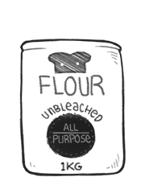

all purpose flour
All-purpose, or plain flour, has a medium level of gluten protein content.
AP has enough protein content for many bread and pizza bases, although artisan bakers often use bread flour and special grade 00 Italian flours. "Plain" also refers to AP's lack of any added leavening agent.
Weight: 1 cup | 4 1/4 oz | 120 g
flour
Flour is a powder made by grinding raw grains, roots, beans, nuts, or seeds. It is used to make many different foods. Cereal flour is the main ingredient of bread, which is a staple food for most cultures. Wheat is the most common base for flour, as is corn flour and rye flour. Cereal flour consists either of the endosperm, germ, and bran together (wholegrain wheat flour) or of the endosperm alone (all purpose flour).